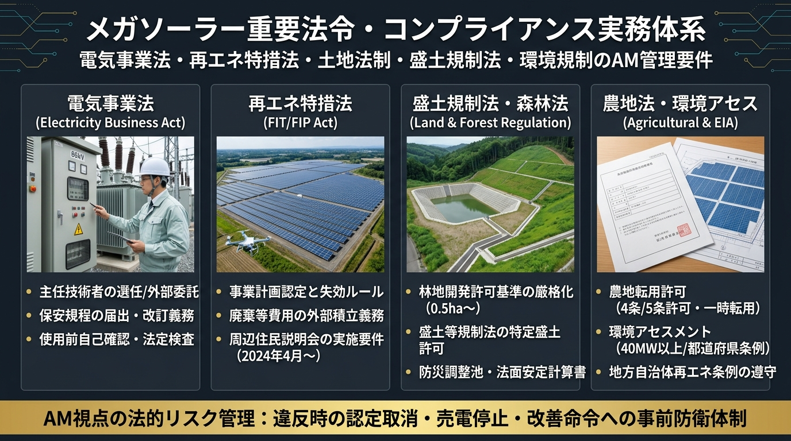

メガソーラー重要法令・コンプライアンス実務体系スライド
電気事業法（主任技術者・保安規程）× 再エネ特措法（FIT/FIP認定・廃棄積立）× 盛土規制法・森林法（0.5ha基準・法面計算）× 農地法・環境アセスの4大柱とAM防衛要件

⚡ 発電所スペック別 法令適用クイック診断ツール
発電所の出力規模・立地環境・制度を選択すると、適用される法律・義務付けられる手続きがリアルタイムに表示されます。
この発電所に適用される主要義務・手続き
1. 電気事業法（保安・技術基準の根本法）
所管：経済産業省（産業保安監督部）発電設備を安全に設置・維持・運用するための憲法です。安全を怠ると改善命令や罰則が科され、事故時には刑事責任にも問われます。
出力50kW以上の太陽光発電所は、法律上「自家用電気工作物」に分類されます（10kW〜50kW未満も法改正により「小規模事業用電気工作物」として保安規程届出等の規制が強化されています）。
主要条文とAMの実務義務
| 条文 | 法定事項 | AM実務における具体的アクション |
|---|---|---|
| 第39条 | 技術基準適合維持義務 | 電気設備技術基準および電技解釈に適合した状態を常に維持する義務。台風・地震後の設備変形・絶縁不良を放置してはならない。 |
| 第42条 | 保安規程の届出・遵守 | 工事・維持・運用の保安規程を策定し、事業開始前に産業保安監督部長へ届出。月次・年次点検の実施と記録保存義務（法令3年間等）。 |
| 第43条 | 電気主任技術者の選任届出 | 工事・維持・運用の保安監督者を選任する義務。高圧は第3種以上、特高は第2種以上。外部委託承認制度を利用する場合は要件遵守確認。 |
| 第47条・48条 | 工事計画届出・使用前自主検査 | 特高（2,000kW以上）の設置・増工時は30日前までに工事計画届出。高圧（500kW〜2,000kW未満）は使用前自己確認の届出。 |
電気関係報告規則第3条（事故報告の厳格義務）
設備に重大事故が発生した場合は、経済産業局産業保安監督部長への報告が法律で義務付けられています。
| 報告区分 | 期限 | 対象となる事故の代表例 |
|---|---|---|
| 速報 | 事故発生を知った時から24時間以内（電話・FAX等） | 感電死傷事故、電気火災、主要電気工作物（PCS・変圧器等）の損壊、電力会社系統への波及事故。 |
| 詳報 | 事故発生を知った日から30日以内（様式第13号による書面） | 事故の原因、被害の程度、応急処置の内容、再発防止策を詳細に報告。 |
保安規程の未届・主任技術者の未選任・技術基準不適合に対する改善命令に従わない場合、最高で300万円以下の罰金（第118条等）。また、虚偽報告や検査拒否には30万円以下の罰金。
2. 再エネ特措法（FIT/FIP制度・事業規律の根本法）
所管：経済産業省 資源エネルギー庁正式名称は「再生可能エネルギー電気の利用の促進に関する特別措置法」。売電収入（FIT調達価格／FIPプレミアム）の根拠法であると同時に、近年急速に「事業規律の厳格化」が進められている最重要法令です。
主要条文とAMの実務義務
| 条文・制度 | 法定事項 | AM実務における具体的アクション |
|---|---|---|
| 第9条 | 事業計画認定制度 | 電力会社との接続同意、関係法令（農地・森林等）の許認可取得、土地権原確保を証明してエネ庁の認定を受ける。 |
| 第9条第4項 | 説明会及び事前周知措置（2024年4月〜） | 設置場所の敷地境界から原則1km圏内の住民に対し、事前説明会を開催する義務。複数市町村にまたがる場合は関係自治体への事前通知必須。 |
| 第15条の6 | 廃棄等費用積立制度 | 事業終了後のパネル放置・不法投棄を防ぐため、認定10年目以降（または調達期間初年度から）原則として電力広域的運営推進機関（OCCTO）による源泉徴収（控除）により強制積立。 |
| 標識・柵塀義務 | 標識掲示 ＆ フェンス設置義務 | 事業者名・保守点検責任者名・連絡先を記載した標識（20kW以上はA3相当以上）を外部から見える場所に設置。構内立ち入りを防ぐフェンス・施錠。 |
| 定期報告義務 | 設置費用報告 ＆ 運転費用報告 | 毎年、FITポータルを通じて「前年度の運転維持費用（OPEX）」等を期限内に報告する義務。 |
自治体の太陽光条例や関係法令（森林法・盛土法・農地法等）に違反し、自治体等からエネ庁へ通報・情報提供があった場合、エネ庁はFIT買取金額（交付金）の支払いを一時留保（ストップ）します。是正されない場合は認定取消に至ります。レンダーも最も警戒する条項です。
事業計画策定ガイドラインの遵守違反や改善命令に従わない場合、事業計画認定の取消（第15条）、事業者名の公表、および交付金（売電収入）の全額没収・返還請求。
3. 農地法（土地転用とソーラーシェアリング）
所管：農林水産省（農業委員会・都道府県知事）日本の優良農地を保護するための法律です。農地に太陽光発電設備を設置する場合、原則として「農地転用許可」を受けなければ1枚のパネルも置くことができません。
農地転用の2大ルート
| 区分 | 条文 | 対象と要件 |
|---|---|---|
| 恒久転用（第4条・第5条） | 第4条（自己所有地の転用） 第5条（売買・賃貸を伴う転用） |
農地を完全に宅地・雑種地に地目変更して太陽光を設置。第1種農地・甲種農地は原則不許可。第2種・第3種農地のみ転用可能。 |
| 一時転用（ソーラーシェアリング） | 第4条/第5条の「一時転用許可」 | 架台下部で営農を継続する「営農型太陽光発電」。支柱の基礎部分のみを一時転用許可（3年間。担い手等の場合は10年間）。 |
営農型（ソーラーシェアリング）特有の維持義務
- 単収80%確保義務：架台下部の作物の収穫量が、地域の同種作物の平均単収と比較して「おおむね8割以上」を維持すること。
- 年次報告義務：毎年、地域の農業委員会へ「営農実績報告書」を提出。
- 荒廃時の撤去命令：営農が放置されて荒廃した場合、一時転用許可が取り消され、設備の全撤去・農地への原状回復が命じられます。
無許可転用や命令違反には、3年以下の懲役又は300万円以下の罰金（法人は最高1億円の罰金）（第64条）。原状回復命令（撤去）が下されます。
4. 森林法（林地開発許可制度）
所管：林野庁（都道府県知事）山林でのメガソーラー開発において、土砂崩壊や水害を防止するための最重要環境法です。
従来は「1ヘクタール（10,000㎡）超」が林地開発許可の対象でしたが、太陽光発電設備を目的とする開発については、基準が厳格化され「0.5ヘクタール（5,000㎡）超」から都道府県知事の許可が必須となりました。
林地開発許可の4大審査基準
- 土砂の流出・崩壊防止：盛土・切土の法面勾配、小段の設置、法面保護工（植生マット・吹付工）。
- 水害の防止：豪雨時に下流の河川や集落へ鉄砲水が流出するのを防ぐため、防災調整池の設置義務。
- 水源のかん養：下流の農業用水・水道水源の水質・水量を阻害しないこと。
- 環境の保全：周辺の森林環境や景観との調和、緩衝緑地帯の確保。
AMの維持管理責任
発電開始後も、調整池に土砂が堆積していないかの定期点検・浚渫（しゅんせつ）、放流口のゴミ詰まり点検、排水側溝の清掃が求められます。怠って下流へ土砂が流出した場合、損害賠償および行政処分の対象になります。
無許可開発や命令違反に対しては、3年以下の懲役又は300万円以下の罰金（第206条）。工事停止命令・復旧命令。
5. 盛土規制法（宅地造成及び特定盛土等規制法）
所管：国土交通省・農林水産省・環境省2021年静岡県熱海市の土石流災害を受け、従来の「宅地造成等規制法」が2023年5月に抜本改正されて施行された法律です。
メガソーラーにおける適用ポイント
- 規制区域の指定：都道府県が「宅地造成等工事規制区域」または「特定盛土等規制区域」を指定。山間部のメガソーラー適地の多くが規制区域に入ります。
- 許可対象規模：規制区域内で行われる一定規模以上（盛土の高さが一定以上、または面積が一定以上）の造成工事。太陽光敷地内の土砂仮置き（一時堆積）も規制対象。
- 土地所有者等の常時安全保持義務：工事中だけでなく、土地の所有者・管理者（SPV・AM）は、盛土が崩壊しないよう「常時安全な状態を維持する義務」を負います。
無許可での盛土や改善命令違反に対して、個人の場合は3年以下の懲役又は1,000万円以下の罰金、法人の場合は最高3億円の重加算罰金（第54条等）。
6. 環境影響評価法（環境アセス法）＆ 自治体条例
所管：環境省・経済産業省大規模なメガソーラー開発による生態系・水質・景観への影響を事前に調査・予測・評価する制度です。2020年4月から太陽光発電所が正式に対象に追加されました。
| 規模区分 | 発電規模 | 手続きの内容 |
|---|---|---|
| 第一種事業 | 40,000kW（40MW）以上 | 必ず環境アセスメントの実施が義務付けられる事業。 |
| 第二種事業 | 30,000kW以上〜40,000kW未満 | 環境影響の程度を個別に判定する「スクリーニング手続き」を行い、知事がアセス要否を決定。 |
| 自治体条例アセス | 10,000kW（10MW）以上など | 国の基準よりも厳しい規模（10MWや5MW超）でアセスを義務付ける都道府県・市町村条例が多数存在。 |
環境アセスは「配慮書 → 方法書 → 準備書 → 評価書」と進めるため、着工までに最短でも2〜3年の歳月と数千万円以上の費用がかかります。既存設備の増工（リパワリング）により出力が30MWを超える場合も対象となるため、開発計画の初期スクリーニングが必須です。
7. その他の重要関連法令一覧
| 法令名 | 主要な規制内容と提出書類 |
|---|---|
| 建築基準法 | 架台の高さが4mを超える場合、工作物確認申請が必要。キュービクルの基礎コンクリートの構造計算。 |
| 消防法 | キュービクル設置時の周囲離隔距離（保有空地）。蓄電池設備（一定容量以上）の届出、消火設備、危険物保管。 |
| 文化財保護法 | 事業地が「周知の埋蔵文化財包蔵地」に含まれる場合、着工60日前までに教育委員会へ届出（第93条）。試掘調査の指示。 |
| 労働安全衛生法 | 高所作業時の安全帯（フルハーネス）着用、特別教育（低圧・高圧電気取扱業務）、足場点検記録。 |
| 廃棄物処理法・建設リサイクル法 | 台風や雪害で破損したモジュール・パワコンの撤去時、産業廃棄物マニフェスト（管理票）を発行し7年間保管する義務。 |
| 自治体太陽光規制条例 | 全国200以上の自治体で独自条例が施行中。禁止区域・抑制区域の設定、事前協議、住民同意書の提出義務、届出制。 |
AM法令遵守・年間タスクカレンダー
・保安規程に基づく月次巡視点検の立会い・報告書受領
・フェンス施錠状況、標識（看板）の破損・退色チェック
・監視カメラ・遠隔監視ルーターのセキュリティログ確認
・年次停電点検（保護継電器・VCB連動試験）の計画と実施
・梅雨・台風前の防災調整池浚渫・排水溝清掃・法面目視点検
・FITポータルでの「設置費用・運転費用報告」の期限内提出
・設備破損・事故時の24時間以内速報 ＆ 30日以内詳報
・代表者・保安体制変更時の保安規程・特措法変更届出
・地域住民からの苦情（反射光・雑草・土砂）への誠実対応・記録